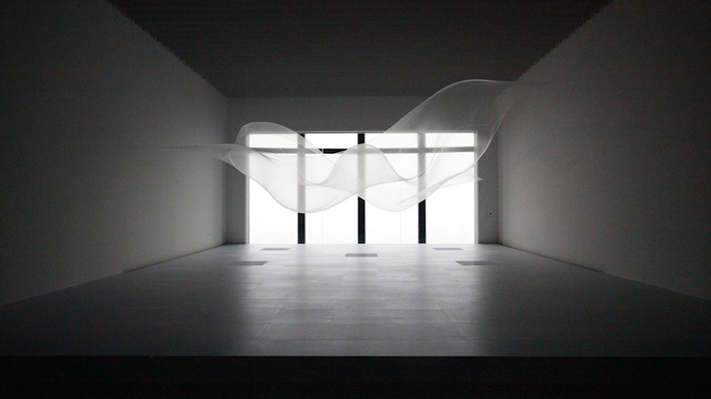

minimal

大巻伸嗣
https://matome.naver.jp/odai/2134900957259514601-どんな人
インスタレーション作品やパブリックアート作品を多く制作しています。
-解説
透明の薄い布が上下にうごきながらなびく様子が印象的な空間インスタレーション作品です。下にファンが設置されており、風を送ることによって常に布が浮かび上がるような仕組みになっています。
-好きなところ
布がつねにふわふわ浮かんでいる様子が重力に逆らっている感じがして好きです。